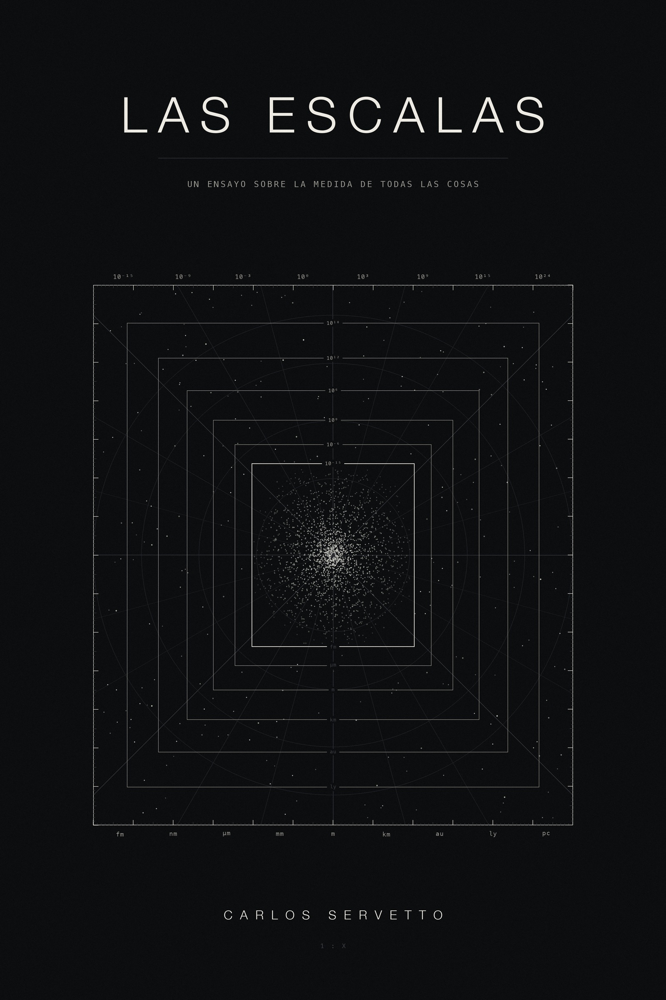

LA
PALABRA
Hay una palabra que contiene este libro entero, y es la que le da título.
Escala viene del latín scala: escalera, peldaño, tramo de una subida. Su origen se remonta a una antigua raíz indoeuropea vinculada con trepar. La palabra, desde el principio, nombra una operación: pasar de un nivel a otro. Moverse entre alturas.
Del latín pasó a las lenguas romances y desde ahí se dispersó, como las semillas de los cardos, hacia significados que hoy casi no parecen pertenecer a la misma palabra.
La escala de un mapa es la relación entre el tamaño del dibujo y el tamaño de lo dibujado. Hacer escala en un viaje es detenerse en un punto intermedio, un puerto o un aeropuerto donde el avión se posa antes de seguir: la escala es la pausa entre dos distancias, el peldaño entre dos tramos del recorrido. Escalar una montaña es trepar por ella, subir de un nivel a otro con las manos y los pies. Y la escala musical —do, re, mi, fa, sol, la, si— es una sucesión de alturas sonoras: una escalera acústica que asciende hasta que una nota vuelve a aparecer más arriba, reconocible y distinta a la vez, como si al llegar al último peldaño empezara otra escalera encima.
Todas estas acepciones parecen distintas. No lo son. Todas contienen la misma operación: cambiar de nivel.
Este libro es sobre eso.
La historia de la ciencia puede leerse, en gran medida, como la historia de estos desplazamientos. Cuando miramos hacia abajo, hacia escalas cada vez menores, la materia pierde las propiedades que parecían definirla. La solidez desaparece. Los objetos dejan de comportarse como objetos familiares. En el dominio cuántico aparecen probabilidades, superposiciones y fenómenos para los cuales nuestra experiencia cotidiana sirve de poco.
Cuando miramos hacia arriba, hacia escalas astronómicas, también cambia el mundo: la gravedad curva el espacio y el tiempo, las estrellas colapsan, las galaxias se agrupan en estructuras que atraviesan distancias que ninguna intuición humana puede abarcar. Las dos descripciones funcionan con una precisión extraordinaria dentro de sus dominios. Y todavía no sabemos cómo hacerlas encajar completamente entre sí.
Nuestra percepción natural quedó atrapada en el medio. Vivimos dentro de una franja estrechísima de tamaños, tiempos y energías, moldeada por aquello que nuestros antepasados necesitaban distinguir para sobrevivir. Vemos piedras, árboles, cuerpos, animales, distancias recorribles. Escuchamos una pequeña porción de las vibraciones del aire. Percibimos segundos, días, estaciones, vidas. Fuera de esa ventana ocurre casi todo.
Y el problema no es solo de espacio. Una montaña parece inmóvil a la escala de una vida humana. Durante siglos puede servir como emblema de permanencia. Pero a escala geológica se eleva, se fractura, se erosiona y desaparece. Continentes enteros se desplazan. Océanos se abren y se cierran. La piedra, mirada durante suficiente tiempo, empieza a comportarse como algo que fluye. Muchas de las cosas que llamamos permanentes son simplemente procesos demasiado lentos para nuestros ojos. La solidez del mundo depende, en parte, de nuestra miopía temporal.
La pregunta de este libro es qué ocurre cuando llevamos esta idea hasta el final. Qué sucede cuando comprendemos que la escala en la que observamos algo no es una propiedad secundaria de la observación, sino una de las condiciones que determinan qué aparece, qué desaparece y qué significado adquiere aquello que tenemos enfrente. A una escala hay individuos; a otra, poblaciones; a otra, especies; a otra, genes que atraviesan cuerpos durante millones de años. A una escala una roca es un objeto inmóvil; a otra, una estructura cristalina; a otra, un conjunto de átomos vibrando; a otra, materia sometida a presiones y temperaturas capaces de doblar continentes. Nada de eso es menos real que lo demás. Pero ninguna escala contiene por sí sola el mundo entero.
La escala, en este libro, no es solamente una metáfora. Es una herramienta de selección. Un instrumento que vuelve visibles ciertas cosas al mismo tiempo que condena otras a desaparecer. Cada escala ilumina algo. Cada escala mutila algo. Cambiar de escala no consiste entonces en alejarse de la realidad. Consiste en descubrir cuántas realidades distintas estaban ocurriendo en el mismo lugar mientras nosotros mirábamos una sola.
Y quizás eso sea lo inquietante. Que el mundo no cambie cuando cambiamos de escala. Que siempre haya sido así. Que debajo de cada peldaño haya otro. Y debajo de ese, otro más.